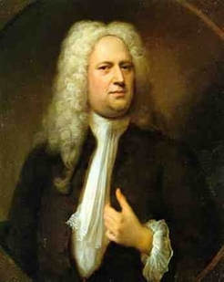

Georg Friedrich Händel
német (szász) származású zeneszerző, hangszeres előadó, 1685. február 23-án született Halle városában. A barokk zene egyik legnagyobb mestere. Élete nagy részét Angliában töltötte, ezért az angolok nemzeti szerzőjüknek tartják. Nagy hatással volt a bécsi klasszikusokra, Haydnra, Mozartra és Beethovenre. Londonban, 1759. április 14-én halt meg. Händel apja szász fejedelmi udvari orvos, fia születésekor már meglehetősen idős, 63 éves volt. Jogi pályára szánta, de a fia a zene iránt érdeklődött és a tiltás ellenére a padlásukra egy kis klavikordot (a zongora egyik elődje) csempészett fel, hogy gyakorolhasson. Egyik alkalommal a Szász-Weissenfels hercege meghallotta, amint a kis Georg elkezdett orgonán játszani, és ez eldöntötte a sorsát. Apja beleegyezett, hogy egyszerre mindkét irányban képezze magát. 1702-ben felvették a hallei egyetemre, és hamarosan orgonista állást kapott a kálvinista templomban. Händelt már ekkor érdekelte az opera, ezért 1703-ban Hamburgba költözött, ahol városi operaház működött. Hegedűsként és csembalistaként alkalmazták.
német (szász) származású zeneszerző, hangszeres előadó, 1685. február 23-án született Halle városában. A barokk zene egyik legnagyobb mestere. Élete nagy részét Angliában töltötte, ezért az angolok nemzeti szerzőjüknek tartják. Nagy hatással volt a bécsi klasszikusokra, Haydnra, Mozartra és Beethovenre. Londonban, 1759. április 14-én halt meg. Händel apja szász fejedelmi udvari orvos, fia születésekor már meglehetősen idős, 63 éves volt. Jogi pályára szánta, de a fia a zene iránt érdeklődött és a tiltás ellenére a padlásukra egy kis klavikordot (a zongora egyik elődje) csempészett fel, hogy gyakorolhasson. Egyik alkalommal a Szász-Weissenfels hercege meghallotta, amint a kis Georg elkezdett orgonán játszani, és ez eldöntötte a sorsát. Apja beleegyezett, hogy egyszerre mindkét irányban képezze magát. 1702-ben felvették a hallei egyetemre, és hamarosan orgonista állást kapott a kálvinista templomban. Händelt már ekkor érdekelte az opera, ezért 1703-ban Hamburgba költözött, ahol városi operaház működött. Hegedűsként és csembalistaként alkalmazták.
Három operát komponált Hamburgban és már 1705-ben be is mutatták az elsőt,
az Almirát, ezt követte a Nero és a Florindo és Daphne. 1706-ban Rómába utazott,
ahol operákat, oratóriumokat, világi és egyházi kantátákat komponált. 1709-ben
Velencében, az opera fellegvárában mutatta be az Agrippinát. Megismerkedett Alessandro
és Domenico Scarlattival, Corellivel és Vivaldival, valamint más zenészekkel,
tanulmányozta a nápolyi és a velencei operát. 1710-ben Angliába utazott, ahol
a következő évben bemutatták Rinaldo című operáját a Queen’s Theatre-ben, melyet további operák követtek.
1711-ben a hannoveri választófejedelem udvari karmestere lett, innen azonban
gyakorlatilag megszökött és 1712-ben Londonban telepedett le. Anna királynő évi
200 fontos járadékot biztosított számára. Már itt írta Utrechti Te Deumát, amit
1713-ban mutattak be. A királynő azonban röviddel ezután, 1714-ben utód nélkül meghalt
és a trónon I. György néven az a hannoveri választófejedelem követte, akitől Händel
engedély nélkül távozott. A király természetesen hűvösen viselkedett a zeneszerzővel
szemben, de egy történet szerint Händel egy 1717-es temzei kirándulás alkalmával
előadott, erre az alkalomra írt zeneművel engesztelte ki. Ez volt a Vízizene.
Händel 1718-tól 1720-ig Chandos herceg zeneigazgatója volt. 1720-ban
a Royal Academy of Music zenei vezetője lett, feladata az olasz típusú
operák népszerűsítése volt. Természetesen saját operái is műsorra kerültek.
Nagy diadalok fémjelezték ezt az időszakot, élvonalbeli énekeseket és zenészeket
szerződtetett, London az európai operaélet központja lett. Az állandó anyagi
gondokkal küszködő színház operatársulata 1728-ban feloszlott. Händel népszerűsége
azonban egyre emelkedett, Európában is ismertté vált, az angol állampolgárságot
is megkapta. 1729-ben összefogott Johann Jacob Heidegger intendánssal egy új
olasz társulat létrehozására, ahol több operáját is bemutatták. 1734-ben a
Covent Garden Theatre élére került. Erre az időszakra esik hosszas küzdelme
vetélytársaival és a londoni közönség közönyével, ami a komponistát teljes anyagi
csőddel és testi megrendüléssel fenyegette, de alkotóerejét nem vette el, csak az
operától távolodott el kissé.
Leghíresebb operái: Julius Caesar Egyiptomban, Tamerlano, Rodelinda a longobárdok
királynője, Orlando, Ariodante, Alcina és Xerxes.

Ezekben az években keletkeztek a legnagyobb szólóhangszeres, kamara- és
zenekari művei is, köztük az op. 3-as concerto grossók, az op. 6-os concerto
grossók, kilenc billentyűs szvit, hat orgonaverseny, több triószonáta.
1740-ben írta meg a tizenkét darabból álló op. 6-os concerto grossót vonósokra.
A sorozatot Bach hat Brandenburgi versenyével együtt a barokk zenekari darabok csúcspontjának tekintik.
A mintegy 40 opera megírása után érdeklődése középpontjába fokozatosan az
oratórium került, melyekből összesen 22-t írt, s szinte mindegyikük nagy
sikert aratott a középosztálybeli angol közönség körében, akik szívesen fogadták
az ismert bibliai történetek epikus stílusú feldolgozását. Händel oratóriumai zeneileg
az angol kórushagyományokra támaszkodtak, azokat újjáélesztette és továbbfejlesztette.
A leghíresebb oratóriumai: Acis és Galatea, Esther, Izrael Egyiptomban, Samson, Judas Maccabeus, Joshua és Jephta.
A Vízizene szabadtéri előadásra komponált zenekari mű. Három szvitet tartalmaz
különböző hangnemekben (F-dúr, D-dúr, G-dúr) és különböző hangszer összeállítású
együttesekre készültek. Az ünnepséget a Temzén rendezték meg és 50 zenész adta elő
a darabot, akik hajóval csatlakoztak a királyhoz. A királynak állítólag annyira
tetszett, hogy még háromszor eljátszatta velük az út során.
1749-ben a király nagyszabású ünnepséget szándékozott rendezni az aacheni
béke megünneplésére, tűzijátékkal, zenével. Erre az alkalomra olyan zenét rendelt Händeltől,
amelyben a vezető szerepet a fúvós hangszerek viszik. Már a Tűzijáték-zene főpróbáját is
hatalmas érdeklődés övezte, a 12000 főnyi tömeg három órára megbénította a közlekedést.
Az előadás hat nappal később zajlott le, a tűzijáték csődöt mondott, de a zene nagy sikert
aratott, a király is elégedett volt.
Talán a leghíresebb oratóriuma az 1741-ben írt Messiás, bemutatójára két évvel később,
1743-ban került sor a Covent Gardenben. A mű csak később aratott tetszést a londoni közönség
körében, miután 1750-ben jótékony célú előadásként el kezdte játszani a Lelencház kápolnájában,
az általa adományozott új orgonán. „A Messiás Händel egyetlen egyházi oratóriuma a szó igazi értelmében,
s ennél fogva nem tipikus; nagysága egyfelől abból ered, hogy magában álló módon olvasztja egybe az olasz
opera, az angol anthem és a német passió hagyományait, másfelől abból, hogy Händel személyes hite és alkotó
géniusza itt minden más műnél tökéletesebben tudja kifejezésre juttatni az anglikán vallásos szellem
legmélyebb törekvéseit. Mindamellett, bármilyen magas szinten is, (Jennens szavával) „szórakozás” marad,
nem válik az istentisztelet részévé.” (Winton Dean) A Messiás Halleluja tétele Angliában amolyan második
nemzeti himnusszá vált: a koncerttermekben azóta is hagyományosan felállva hallgatja a közönség, illetve
a kórussal együtt énekli mindenki.
Életének vége felé erősen megromlott a látása, szürkehályog-műtétei sikertelenek voltak,
ezután gyakorlatilag megvakult. Robusztus testi-lelki tulajdonságai révén megőrizte életkedvét,
noha a zeneszerzéssel ezután kevesebbet tudott foglalkozni, viszont élete végéig hangversenyezett,
orgonadarabjait adta elő Londonban. 1759. április 14-én, nagyszombaton halt meg. A Westminster-apátságban,
Anglia nemzeti panteonjában temették el Purcell, Shakespeare, Dickens, Faraday, Newton és
természetesen a királyaik mellé. Hagyatéka a királyi ház tulajdonából a British Múzeumba került.
Händel igen népszerű volt Angliában, zenéjét a nemzeti karakter tükrének nevezték.
A kortársak szerint vidám, lobbanékony, olykor goromba, de mindig igazságos ember volt.
A politikától távol tartotta magát, sokat jótékonykodott, szerette az italt és a jó ételeket,
soha nem házasodott meg.
Ebben a házban élt Händel 1723-tól egészen haláláig, itt írta a legismertebb és a legnépszerűbb oratóriumát, a Messiást.
A halála után néhány évvel már megjelent az első, életét összegző mű John Mainwaring tollából.
Az angolok annyira tisztelték, hogy születésének 100. évfordulójára, 1785-ben centenáriumi ünnepséget
rendeztek tiszteletére. Ettől kezdve, de rendszeresen csak 1859 óta hatalmas Händel-ünnepségeket szentelnek emlékének.
Zenéje drámaiságának kialakulása kétségkívül Itáliához volt köthető. Az olasz zenei hagyományok
élete végéig elkísérték, de mindezek a német zenében gyökerező sajátos kifejezést erősítették. Műveiben,
főleg operáiban és oratóriumaiban rendkívüli drámai erőt érezni. Erőteljesen alkalmazta a kórusokat,
mintegy szerepet, főszerepet adott számukra. Ahhoz, hogy ezek a művek ilyen módon létrejöhettek,
a korabeli Anglia művelt és széles körű zenei közönsége is kellett. Hangszeres műveiben is a különböző
zenei kultúrák egybeforrasztása nyilvánul meg. A concerto grossók különlegesen őrzik az olasz jelleget.
A szvitek, a kamarazeneművek s főként a zongoraművekben még több hatás fedezhető fel: francia, német és olasz elemek keverednek.
Képgaléria